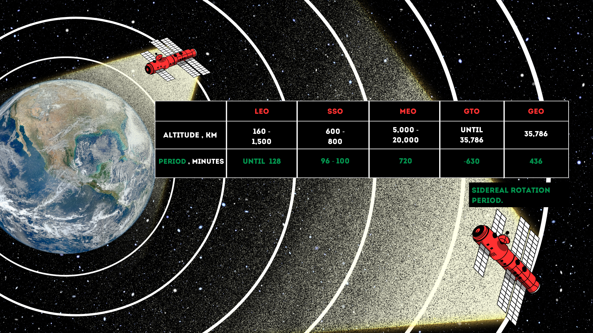
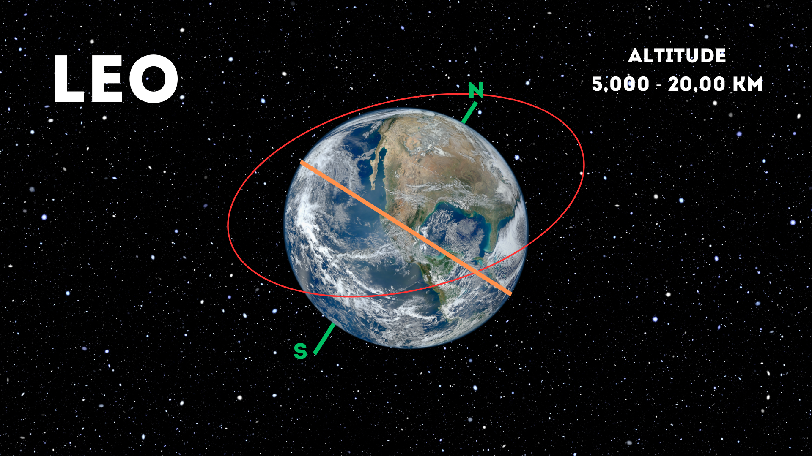
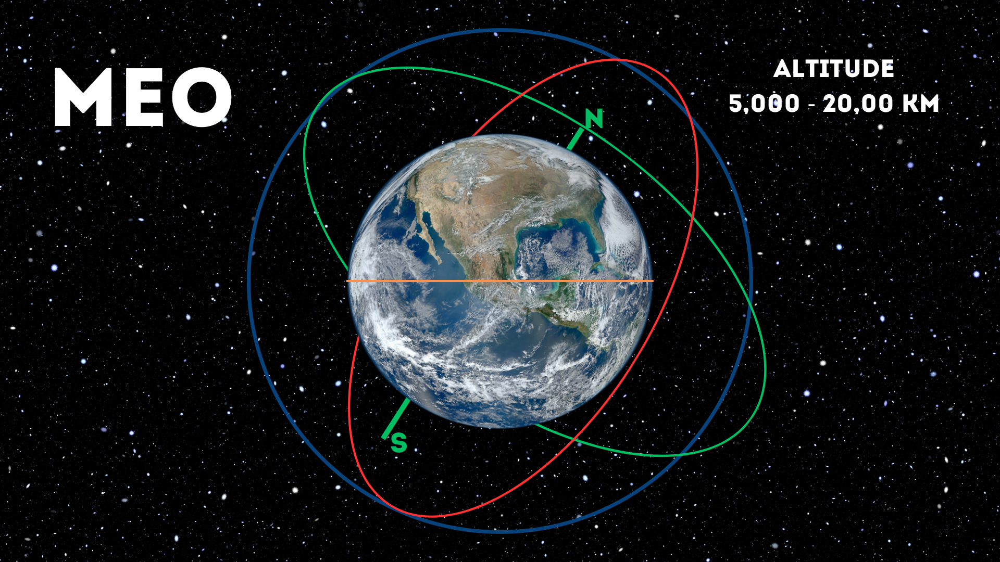
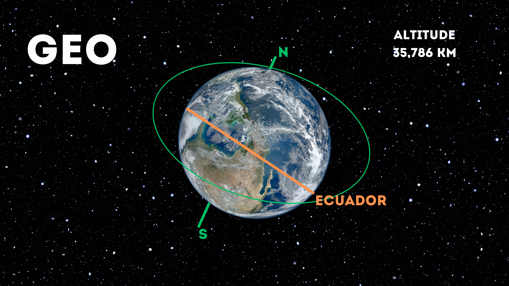
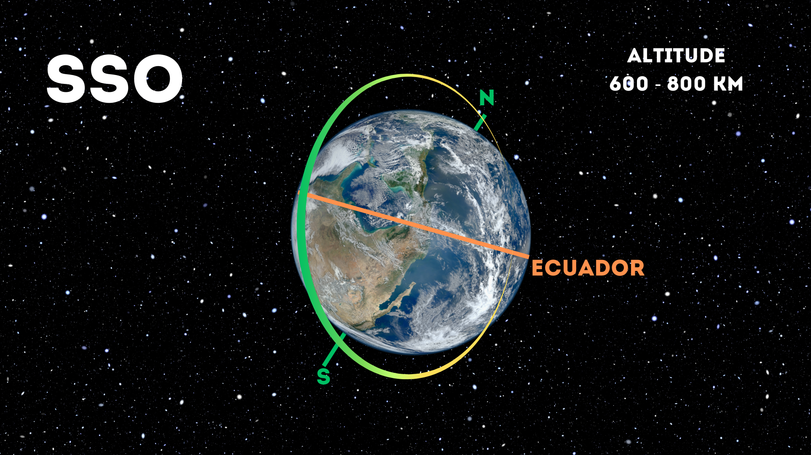
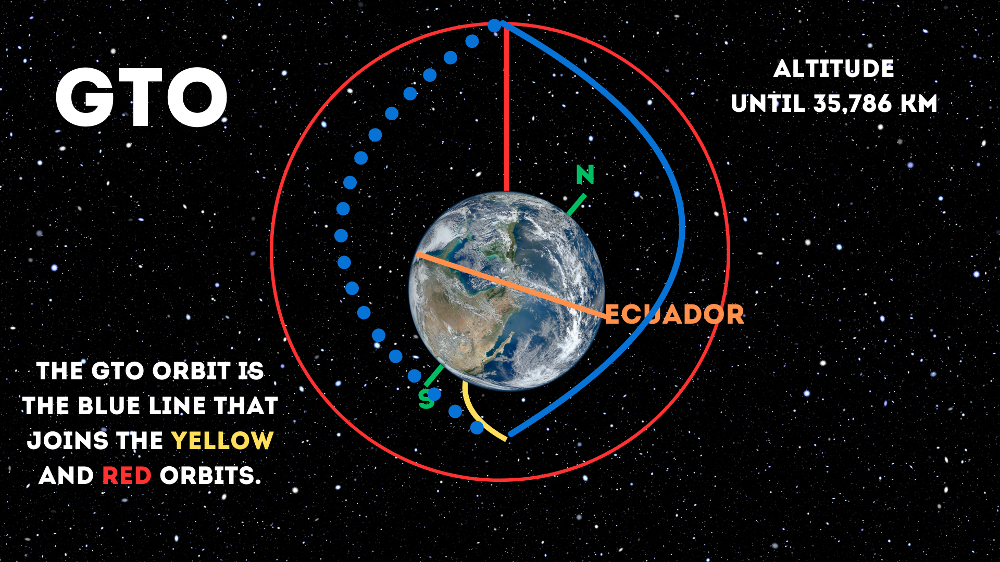

What is an Satellite?
In astronomy, satellites are the objects that orbit the planets. These can be natural satellites, composed of rocks, minerals and other elements, like our Moon; or they can be artificial satellites, that is, man-made machines that orbit the planet Earth. Artificial satellites are an important part of our lives, allowing us to perform various daily and scientific tasks.
For example, they fulfill various telecommunications functions. On the other hand, fragments of them that constitute the so-called “space trash”.
Natural Satellites
Did you know? Any body, artificial or natural, that rotates around another larger body, trapped by its gravitational attraction. Its clearest examples are the natural satellites of the planets. All planets have one or more natural satellites, except Mercury and Venus. Natural satellites are also called moons.

.jpeg)

.jpeg)

Artificial Satellites
What is an artificial satellites?
These are artificial satellites to send and receive communications for mass use such as telephony, television or the Internet; to make weather forecasts or to provide educational and health services in areas inaccessible to other more traditional technologies; and some satellites have even been launched into space for military and scientific research purposes.
Types of Artificial Satellites According to Their Orbit
Satellites are classified primarily by their orbital altitude, which determines their coverage and speed. Here are the five main types of orbits:
Low Earth Orbit (LEO):
These satellites orbit at relatively low altitudes, allowing for fast coverage and lower latency. They are common in earth observation and high-speed communications applications.
Medium Earth Orbit (MEO)
These satellites are located at intermediate altitudes and are mainly used in global navigation systems such as GPS. They offer global coverage with moderate latency.
Geostationary orbit (GEO):
Satellites in geostationary orbit remain over the same location on the Earth's surface, making them ideal for telecommunications, satellite television, and meteorology services.
Sun-synchronous orbit (SSO):
These satellites orbit the Earth aligned with the direction of the Sun, which allows them to maintain constant illumination over a certain area throughout the day. They are common in Earth observation missions for mapping, environmental monitoring, and climate observation.
Geostationary Transfer Orbit (GTO):
This orbit is used as an intermediate stage to launch satellites into geostationary orbits. Satellites launched into a geostationary transfer orbit then use their own propulsion system to circularize their orbit and reach the final geostationary position.
What Are the Different Types of Satellites and Their Functions?
Space technology has multiple uses beyond communications and television. Various types of satellites have been launched for scientific applications, such as Earth observation, meteorological study, navigation and astronomy.
The four main types are: communications, Earth observation, navigation and astronomy.